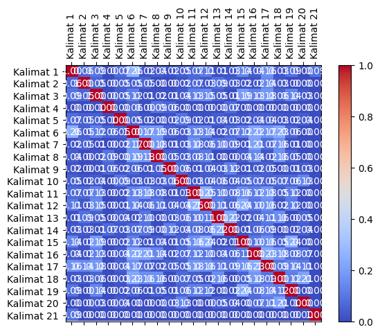
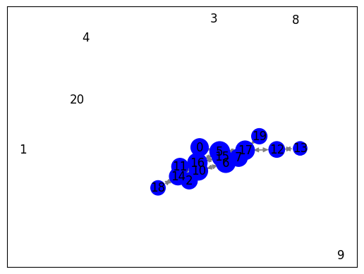

Crawling data berita#
!pip install Sastrawi
from nltk.tokenize import word_tokenize
from nltk.corpus import stopwords
from sklearn.feature_extraction.text import TfidfVectorizer
from sklearn.feature_extraction.text import CountVectorizer
from Sastrawi.Stemmer.StemmerFactory import StemmerFactory
import warnings
import pandas as pd
import numpy as np
import nltk
import re
import csv
nltk.download('stopwords')
nltk.download('punkt')
warnings.filterwarnings('ignore')
Collecting Sastrawi
Downloading Sastrawi-1.0.1-py2.py3-none-any.whl (209 kB)
?25l ━━━━━━━━━━━━━━━━━━━━━━━━━━━━━━━━━━━━━━━━ 0.0/209.7 kB ? eta -:--:--
━━━━━━━╸━━━━━━━━━━━━━━━━━━━━━━━━━━━━━━━━ 41.0/209.7 kB 945.2 kB/s eta 0:00:01
━━━━━━━━━━━━━━━━━━━━━━━━━━━━━━━━━━━━━━━━ 209.7/209.7 kB 2.9 MB/s eta 0:00:00
?25h
Installing collected packages: Sastrawi
Successfully installed Sastrawi-1.0.1
[nltk_data] Downloading package stopwords to /root/nltk_data...
[nltk_data] Unzipping corpora/stopwords.zip.
[nltk_data] Downloading package punkt to /root/nltk_data...
[nltk_data] Unzipping tokenizers/punkt.zip.
import requests
from bs4 import BeautifulSoup
import nltk
import pandas as pd
# Unduh konten halaman web berita
url = "https://radarjatim.id/festival-film-pendek-layar-lokal-diserbu-ratusan-pelajar-sma-dan-smk/"
response = requests.get(url)
html = response.text
# Parsing halaman web menggunakan BeautifulSoup
soup = BeautifulSoup(html, 'html.parser')
# Ekstraksi teks dari elemen-elemen yang berisi berita
article = soup.find('div', class_="content-inner") # Sesuaikan dengan struktur HTML halaman web berita
# Periksa apakah elemen article ada sebelum mencoba mengambil teksnya
if article is not None:
article_text = article.get_text()
# Tokenisasi teks menjadi kalimat menggunakan nltk
nltk.download('punkt') # Pastikan Anda sudah mengunduh tokenisasi kalimat nltk
sentences = nltk.sent_tokenize(article_text)
# Cetak kalimat-kalimat
for sentence in sentences:
print(sentence)
else:
print("Elemen berita tidak ditemukan")
SIDOARJO (RadarJatim.id) — Komunitas-komunitas film pendek yang ada di Sidoarjo terus bergerak, mensosialisasikan keberadaan film pendek yang berkembang membaik.
Kali ini bertemakan ‘Keanekaragaman Lokalitas dan Budaya’ pada tanggal 28-29 Oktober 2023 di Gedung Dewan Kesenian Sidoarjo.
Festival yang memutar film ‘Layar Lokal’ mengangkat kearifan lokal dari berbagai wilayah di Indonesia tersebut, tak diduga diserbu oleh para remaja, rata-rata pelajar SMA, SMK Sidoarjo, Surabaya dan sekitarnya.
Sehingga panitia pun harus menambahkan kursi untuk penonton.
Ketua Asfis (Asosiasi Sineas Film Sidoarjo) Rehal Lahir Prias Sumputari mengatakan kalau kegiatannya mempunyai tiga program utama, yaitu pelatihan, workshop dan pemutaran film.
Juga membantu teman-teman komunitas film yang ada di Sidoarjo, khususnya untuk mendistribusikan karya-karyanya ke berbagai festival.
“Karena kebanyakan teman-teman saat ini kendalanya adalah bagaimana film ini setelah syuting.
Itu mau dikemanakan, teman-teman masih bingung, apa saja yang harus disiapkan.
Itu menjadi tugas kami untuk bersama-sama kita jalan lebih baik sebagai pembuat film.
Jadi tidak hanya membuat film, tidak hanya film jadi disimpan dalam hard disk, tapi film itu bisa berkeliling dan bertemu penontonnya,” ungkap Rehal.
Kemudian sekedar informasi juga, Layar Lokal ini merupakan festival film independen satu-satunya di Jawa Timur yang masih bertahan saat ini.
Yang lainnya kebanyakan dari kampus, dari instansi pemerintah, kemudian di tahun 2019 atau 2018 ya, di Surabaya itu masih ada satu festival film independen yang bergengsi namanya Festival Kecil, namun perjalanannya terhenti.
“Dan saat ini kita Alhamdulillah sudah berjalan selama 4 tahun dan semoga bisa berjalan di tahun-tahun selanjutnya.
Tahun ini kita kembali membuka submission, pendaftaran film untuk tingkat nasional.
Ada 125 film yang mendaftarkan dalam Layar Lokal, kemudian dari 16 provinsi yang ada di Indonesia, mulai dari Aceh sampai Nusa Tenggara Barat.
Pesen saya buat teman-teman, ini festival gratis, full gratis, kalian bisa menikmati film-film lokal dari berbagai daerah,” jelasnya.
“Kita bisa belajar tentang kearifan lokal, maupun budaya yang ada di daerah-daerah di luar Sidoarjo melalui festival film ini.
Semoga teman-teman bisa hadir dan bisa menonton, nantinya akan ada diskusi juga dengan para filmmakernya.
Filmmaker yang akan hadir sekitar 18 tamu dari luar kota, yang terutama film-filmnya lolos dalam Layar Lokal.
Jadi kalian bisa berinteraksi langsung dengan para pembuatnya, kita belajar langsung dengan ekspertnya,” pungkas Rehal.
(mad)
Tags: ASFISfilmKearifanLayarLokalPendekradarjatim.id
[nltk_data] Downloading package punkt to /root/nltk_data...
[nltk_data] Package punkt is already up-to-date!
# Inisialisasi DataFrame
df = pd.DataFrame(columns=["Kalimat"])
df["Kalimat"] = sentences
df
| Kalimat | |
|---|---|
| 0 | \nSIDOARJO (RadarJatim.id) — Komunitas-komunit... |
| 1 | Kali ini bertemakan ‘Keanekaragaman Lokalitas ... |
| 2 | Festival yang memutar film ‘Layar Lokal’ menga... |
| 3 | Sehingga panitia pun harus menambahkan kursi u... |
| 4 | Ketua Asfis (Asosiasi Sineas Film Sidoarjo) Re... |
| 5 | Juga membantu teman-teman komunitas film yang ... |
| 6 | “Karena kebanyakan teman-teman saat ini kendal... |
| 7 | Itu mau dikemanakan, teman-teman masih bingung... |
| 8 | Itu menjadi tugas kami untuk bersama-sama kita... |
| 9 | Jadi tidak hanya membuat film, tidak hanya fil... |
| 10 | Kemudian sekedar informasi juga, Layar Lokal i... |
| 11 | Yang lainnya kebanyakan dari kampus, dari inst... |
| 12 | “Dan saat ini kita Alhamdulillah sudah berjala... |
| 13 | Tahun ini kita kembali membuka submission, pen... |
| 14 | Ada 125 film yang mendaftarkan dalam Layar Lok... |
| 15 | Pesen saya buat teman-teman, ini festival grat... |
| 16 | “Kita bisa belajar tentang kearifan lokal, mau... |
| 17 | Semoga teman-teman bisa hadir dan bisa menonto... |
| 18 | Filmmaker yang akan hadir sekitar 18 tamu dari... |
| 19 | Jadi kalian bisa berinteraksi langsung dengan ... |
| 20 | (mad)\nTags: ASFISfilmKearifanLayarLokalPendek... |
def cleaning(text):
text = re.sub(r'[^a-zA-Z\s]', '', text).strip()
return text
df['data_clean'] = df['Kalimat'].apply(cleaning)
df['data_clean']
0 SIDOARJO RadarJatimid Komunitaskomunitas film...
1 Kali ini bertemakan Keanekaragaman Lokalitas d...
2 Festival yang memutar film Layar Lokal mengang...
3 Sehingga panitia pun harus menambahkan kursi u...
4 Ketua Asfis Asosiasi Sineas Film Sidoarjo Reha...
5 Juga membantu temanteman komunitas film yang a...
6 Karena kebanyakan temanteman saat ini kendalan...
7 Itu mau dikemanakan temanteman masih bingung a...
8 Itu menjadi tugas kami untuk bersamasama kita ...
9 Jadi tidak hanya membuat film tidak hanya film...
10 Kemudian sekedar informasi juga Layar Lokal in...
11 Yang lainnya kebanyakan dari kampus dari insta...
12 Dan saat ini kita Alhamdulillah sudah berjalan...
13 Tahun ini kita kembali membuka submission pend...
14 Ada film yang mendaftarkan dalam Layar Lokal ...
15 Pesen saya buat temanteman ini festival gratis...
16 Kita bisa belajar tentang kearifan lokal maupu...
17 Semoga temanteman bisa hadir dan bisa menonton...
18 Filmmaker yang akan hadir sekitar tamu dari l...
19 Jadi kalian bisa berinteraksi langsung dengan ...
20 mad\nTags ASFISfilmKearifanLayarLokalPendekrad...
Name: data_clean, dtype: object
def cek_specialCharacter(dokumen):
karakter = ['!', '@', '#', '$', '%', '^', '&', '*', '(', ')', '-', '_', '+', '=', '{', '}', '[', ']', '|', '\\', ':', ';', '"', "'", '<', '>', ',', '.', '?', '/', '`', '~']
for i in dokumen:
if i in karakter :
print(dokumen)
df['data_clean'].apply(cek_specialCharacter)
0 None
1 None
2 None
3 None
4 None
5 None
6 None
7 None
8 None
9 None
10 None
11 None
12 None
13 None
14 None
15 None
16 None
17 None
18 None
19 None
20 None
Name: data_clean, dtype: object
Tokenizing
def tokenizer(text):
text = text.lower()
return word_tokenize(text)
df['Tokenizing'] = df['data_clean'].apply(tokenizer)
df['Tokenizing']
0 [sidoarjo, radarjatimid, komunitaskomunitas, f...
1 [kali, ini, bertemakan, keanekaragaman, lokali...
2 [festival, yang, memutar, film, layar, lokal, ...
3 [sehingga, panitia, pun, harus, menambahkan, k...
4 [ketua, asfis, asosiasi, sineas, film, sidoarj...
5 [juga, membantu, temanteman, komunitas, film, ...
6 [karena, kebanyakan, temanteman, saat, ini, ke...
7 [itu, mau, dikemanakan, temanteman, masih, bin...
8 [itu, menjadi, tugas, kami, untuk, bersamasama...
9 [jadi, tidak, hanya, membuat, film, tidak, han...
10 [kemudian, sekedar, informasi, juga, layar, lo...
11 [yang, lainnya, kebanyakan, dari, kampus, dari...
12 [dan, saat, ini, kita, alhamdulillah, sudah, b...
13 [tahun, ini, kita, kembali, membuka, submissio...
14 [ada, film, yang, mendaftarkan, dalam, layar, ...
15 [pesen, saya, buat, temanteman, ini, festival,...
16 [kita, bisa, belajar, tentang, kearifan, lokal...
17 [semoga, temanteman, bisa, hadir, dan, bisa, m...
18 [filmmaker, yang, akan, hadir, sekitar, tamu, ...
19 [jadi, kalian, bisa, berinteraksi, langsung, d...
20 [mad, tags, asfisfilmkearifanlayarlokalpendekr...
Name: Tokenizing, dtype: object
Stopword
corpus = stopwords.words('indonesian')
def stopwordText(words):
return [word for word in words if word not in corpus]
df['Stopword Removal'] = df['Tokenizing'].apply(stopwordText)
# Gabungkan kembali token menjadi kalimat utuh
df['stopword'] = df['Stopword Removal'].apply(lambda x: ' '.join(x))
df['stopword']
0 sidoarjo radarjatimid komunitaskomunitas film ...
1 kali bertemakan keanekaragaman lokalitas buday...
2 festival memutar film layar lokal mengangkat k...
3 panitia kursi penonton
4 ketua asfis asosiasi sineas film sidoarjo reha...
5 membantu temanteman komunitas film sidoarjo me...
6 kebanyakan temanteman kendalanya film syuting
7 dikemanakan temanteman bingung disiapkan
8 tugas bersamasama jalan pembuat film
9 film film disimpan hard disk film berkeliling ...
10 sekedar informasi layar lokal festival film in...
11 kebanyakan kampus instansi pemerintah ya surab...
12 alhamdulillah berjalan semoga berjalan tahuntahun
13 membuka submission pendaftaran film tingkat na...
14 film mendaftarkan layar lokal provinsi indones...
15 pesen temanteman festival gratis full gratis m...
16 belajar kearifan lokal budaya daerahdaerah sid...
17 semoga temanteman hadir menonton diskusi filmm...
18 filmmaker hadir tamu kota filmfilmnya lolos la...
19 berinteraksi langsung pembuatnya belajar langs...
20 mad tags asfisfilmkearifanlayarlokalpendekrada...
Name: stopword, dtype: object
def tfidf(dokumen):
vectorizer = TfidfVectorizer()
x = vectorizer.fit_transform(dokumen).toarray()
terms = vectorizer.get_feature_names_out()
final_tfidf = pd.DataFrame(x, columns=terms)
final_tfidf.insert(0, 'Kalimat', dokumen)
return (vectorizer, final_tfidf)
tfidf_vectorizer, final_tfidf = tfidf(df['stopword'])
final_tfidf
| Kalimat | aceh | alhamdulillah | asfis | asfisfilmkearifanlayarlokalpendekradarjatimid | asosiasi | barat | belajar | bergengsi | bergerak | ... | temanteman | tenggara | terhenti | timur | tingkat | tugas | utama | wilayah | workshop | ya | |
|---|---|---|---|---|---|---|---|---|---|---|---|---|---|---|---|---|---|---|---|---|---|
| 0 | sidoarjo radarjatimid komunitaskomunitas film ... | 0.000000 | 0.000000 | 0.000000 | 0.00000 | 0.000000 | 0.000000 | 0.000000 | 0.000000 | 0.273168 | ... | 0.000000 | 0.000000 | 0.000000 | 0.000000 | 0.000000 | 0.00000 | 0.000000 | 0.000000 | 0.000000 | 0.000000 |
| 1 | kali bertemakan keanekaragaman lokalitas buday... | 0.000000 | 0.000000 | 0.000000 | 0.00000 | 0.000000 | 0.000000 | 0.000000 | 0.000000 | 0.000000 | ... | 0.000000 | 0.000000 | 0.000000 | 0.000000 | 0.000000 | 0.00000 | 0.000000 | 0.000000 | 0.000000 | 0.000000 |
| 2 | festival memutar film layar lokal mengangkat k... | 0.000000 | 0.000000 | 0.000000 | 0.00000 | 0.000000 | 0.000000 | 0.000000 | 0.000000 | 0.000000 | ... | 0.000000 | 0.000000 | 0.000000 | 0.000000 | 0.000000 | 0.00000 | 0.000000 | 0.254385 | 0.000000 | 0.000000 |
| 3 | panitia kursi penonton | 0.000000 | 0.000000 | 0.000000 | 0.00000 | 0.000000 | 0.000000 | 0.000000 | 0.000000 | 0.000000 | ... | 0.000000 | 0.000000 | 0.000000 | 0.000000 | 0.000000 | 0.00000 | 0.000000 | 0.000000 | 0.000000 | 0.000000 |
| 4 | ketua asfis asosiasi sineas film sidoarjo reha... | 0.000000 | 0.000000 | 0.259595 | 0.00000 | 0.259595 | 0.000000 | 0.000000 | 0.000000 | 0.000000 | ... | 0.000000 | 0.000000 | 0.000000 | 0.000000 | 0.000000 | 0.00000 | 0.259595 | 0.000000 | 0.259595 | 0.000000 |
| 5 | membantu temanteman komunitas film sidoarjo me... | 0.000000 | 0.000000 | 0.000000 | 0.00000 | 0.000000 | 0.000000 | 0.000000 | 0.000000 | 0.000000 | ... | 0.289679 | 0.000000 | 0.000000 | 0.000000 | 0.000000 | 0.00000 | 0.000000 | 0.000000 | 0.000000 | 0.000000 |
| 6 | kebanyakan temanteman kendalanya film syuting | 0.000000 | 0.000000 | 0.000000 | 0.00000 | 0.000000 | 0.000000 | 0.000000 | 0.000000 | 0.000000 | ... | 0.365096 | 0.000000 | 0.000000 | 0.000000 | 0.000000 | 0.00000 | 0.000000 | 0.000000 | 0.000000 | 0.000000 |
| 7 | dikemanakan temanteman bingung disiapkan | 0.000000 | 0.000000 | 0.000000 | 0.00000 | 0.000000 | 0.000000 | 0.000000 | 0.000000 | 0.000000 | ... | 0.363895 | 0.000000 | 0.000000 | 0.000000 | 0.000000 | 0.00000 | 0.000000 | 0.000000 | 0.000000 | 0.000000 |
| 8 | tugas bersamasama jalan pembuat film | 0.000000 | 0.000000 | 0.000000 | 0.00000 | 0.000000 | 0.000000 | 0.000000 | 0.000000 | 0.000000 | ... | 0.000000 | 0.000000 | 0.000000 | 0.000000 | 0.000000 | 0.48785 | 0.000000 | 0.000000 | 0.000000 | 0.000000 |
| 9 | film film disimpan hard disk film berkeliling ... | 0.000000 | 0.000000 | 0.000000 | 0.00000 | 0.000000 | 0.000000 | 0.000000 | 0.000000 | 0.000000 | ... | 0.000000 | 0.000000 | 0.000000 | 0.000000 | 0.000000 | 0.00000 | 0.000000 | 0.000000 | 0.000000 | 0.000000 |
| 10 | sekedar informasi layar lokal festival film in... | 0.000000 | 0.000000 | 0.000000 | 0.00000 | 0.000000 | 0.000000 | 0.000000 | 0.000000 | 0.000000 | ... | 0.000000 | 0.000000 | 0.000000 | 0.346942 | 0.000000 | 0.00000 | 0.000000 | 0.000000 | 0.000000 | 0.000000 |
| 11 | kebanyakan kampus instansi pemerintah ya surab... | 0.000000 | 0.000000 | 0.000000 | 0.00000 | 0.000000 | 0.000000 | 0.000000 | 0.287211 | 0.000000 | ... | 0.000000 | 0.000000 | 0.287211 | 0.000000 | 0.000000 | 0.00000 | 0.000000 | 0.000000 | 0.000000 | 0.287211 |
| 12 | alhamdulillah berjalan semoga berjalan tahuntahun | 0.000000 | 0.384173 | 0.000000 | 0.00000 | 0.000000 | 0.000000 | 0.000000 | 0.000000 | 0.000000 | ... | 0.000000 | 0.000000 | 0.000000 | 0.000000 | 0.000000 | 0.00000 | 0.000000 | 0.000000 | 0.000000 | 0.000000 |
| 13 | membuka submission pendaftaran film tingkat na... | 0.000000 | 0.000000 | 0.000000 | 0.00000 | 0.000000 | 0.000000 | 0.000000 | 0.000000 | 0.000000 | ... | 0.000000 | 0.000000 | 0.000000 | 0.000000 | 0.438457 | 0.00000 | 0.000000 | 0.000000 | 0.000000 | 0.000000 |
| 14 | film mendaftarkan layar lokal provinsi indones... | 0.355576 | 0.000000 | 0.000000 | 0.00000 | 0.000000 | 0.355576 | 0.000000 | 0.000000 | 0.000000 | ... | 0.000000 | 0.355576 | 0.000000 | 0.000000 | 0.000000 | 0.00000 | 0.000000 | 0.000000 | 0.000000 | 0.000000 |
| 15 | pesen temanteman festival gratis full gratis m... | 0.000000 | 0.000000 | 0.000000 | 0.00000 | 0.000000 | 0.000000 | 0.000000 | 0.000000 | 0.000000 | ... | 0.211307 | 0.000000 | 0.000000 | 0.000000 | 0.000000 | 0.00000 | 0.000000 | 0.000000 | 0.000000 | 0.000000 |
| 16 | belajar kearifan lokal budaya daerahdaerah sid... | 0.000000 | 0.000000 | 0.000000 | 0.00000 | 0.000000 | 0.000000 | 0.405185 | 0.000000 | 0.000000 | ... | 0.000000 | 0.000000 | 0.000000 | 0.000000 | 0.000000 | 0.00000 | 0.000000 | 0.000000 | 0.000000 | 0.000000 |
| 17 | semoga temanteman hadir menonton diskusi filmm... | 0.000000 | 0.000000 | 0.000000 | 0.00000 | 0.000000 | 0.000000 | 0.000000 | 0.000000 | 0.000000 | ... | 0.302346 | 0.000000 | 0.000000 | 0.000000 | 0.000000 | 0.00000 | 0.000000 | 0.000000 | 0.000000 | 0.000000 |
| 18 | filmmaker hadir tamu kota filmfilmnya lolos la... | 0.000000 | 0.000000 | 0.000000 | 0.00000 | 0.000000 | 0.000000 | 0.000000 | 0.000000 | 0.000000 | ... | 0.000000 | 0.000000 | 0.000000 | 0.000000 | 0.000000 | 0.00000 | 0.000000 | 0.000000 | 0.000000 | 0.000000 |
| 19 | berinteraksi langsung pembuatnya belajar langs... | 0.000000 | 0.000000 | 0.000000 | 0.00000 | 0.000000 | 0.000000 | 0.287103 | 0.000000 | 0.000000 | ... | 0.000000 | 0.000000 | 0.000000 | 0.000000 | 0.000000 | 0.00000 | 0.000000 | 0.000000 | 0.000000 | 0.000000 |
| 20 | mad tags asfisfilmkearifanlayarlokalpendekrada... | 0.000000 | 0.000000 | 0.000000 | 0.57735 | 0.000000 | 0.000000 | 0.000000 | 0.000000 | 0.000000 | ... | 0.000000 | 0.000000 | 0.000000 | 0.000000 | 0.000000 | 0.00000 | 0.000000 | 0.000000 | 0.000000 | 0.000000 |
21 rows × 130 columns
import nltk
from nltk.corpus import stopwords
from nltk.tokenize import word_tokenize, sent_tokenize
nltk.download('stopwords')
nltk.download('punkt')
# Teks contoh
text = "kal"
# Tokenisasi kalimat
sentences = sent_tokenize(text)
# Mengambil daftar kata penghubung
stop_words = set(stopwords.words('indonesian'))
# Mencetak kata penghubung dalam setiap kalimat
for sentence in sentences:
words = word_tokenize(sentence)
connectors = [word for word in words if word.lower() in stop_words]
print(f"Kata penghubung dalam kalimat '{sentence}': {connectors}")
Kata penghubung dalam kalimat 'kal': []
[nltk_data] Downloading package stopwords to /root/nltk_data...
[nltk_data] Package stopwords is already up-to-date!
[nltk_data] Downloading package punkt to /root/nltk_data...
[nltk_data] Package punkt is already up-to-date!
from sklearn.feature_extraction.text import TfidfVectorizer
# Inisialisasi penghitung TF-IDF
tfidf_vectorizer = TfidfVectorizer()
# Hitung TF-IDF
tfidf_matrix = tfidf_vectorizer.fit_transform(sentences)
# Daftar kata kunci
feature_names = tfidf_vectorizer.get_feature_names_out()
# Konversi matriks TF-IDF menjadi bentuk yang lebih mudah dibaca
tfidf_values = tfidf_matrix.toarray()
# Cetak TF-IDF untuk setiap kata dalam setiap kalimat
for i, sentence in enumerate(sentences):
print(f"Kalimat {i + 1}: {sentence}")
for j, word in enumerate(feature_names):
tfidf_value = tfidf_values[i][j]
if tfidf_value > 0:
print(f"{word}: {tfidf_value:.4f}")
print()
Kalimat 1: kal
kal: 1.0000
from sklearn.metrics.pairwise import cosine_similarity
from sklearn.feature_extraction.text import TfidfVectorizer
# Indeks kalimat yang akan dibandingkan
sentence1_index = 0 # Ganti dengan indeks kalimat pertama yang ingin Anda bandingkan
sentence2_index = 1 # Ganti dengan indeks kalimat kedua yang ingin Anda bandingkan
# Ambil vektor TF-IDF untuk kedua kalimat
tfidf_vector1 = tfidf_matrix[sentence1_index]
tfidf_vector2 = tfidf_matrix[sentence2_index]
# Hitung cosine similarity antara kedua vektor
similarity = cosine_similarity(tfidf_vector1, tfidf_vector2)
# Cetak hasil cosine similarity
print(f"Cosine Similarity antara Kalimat {sentence1_index + 1} dan Kalimat {sentence2_index + 1}: {similarity[0][0]:.4f}")
---------------------------------------------------------------------------
IndexError Traceback (most recent call last)
<ipython-input-11-36616d964d19> in <cell line: 10>()
8 # Ambil vektor TF-IDF untuk kedua kalimat
9 tfidf_vector1 = tfidf_matrix[sentence1_index]
---> 10 tfidf_vector2 = tfidf_matrix[sentence2_index]
11
12 # Hitung cosine similarity antara kedua vektor
/usr/local/lib/python3.10/dist-packages/scipy/sparse/_index.py in __getitem__(self, key)
42
43 def __getitem__(self, key):
---> 44 row, col = self._validate_indices(key)
45
46 # Dispatch to specialized methods.
/usr/local/lib/python3.10/dist-packages/scipy/sparse/_index.py in _validate_indices(self, key)
150 row = int(row)
151 if row < -M or row >= M:
--> 152 raise IndexError('row index (%d) out of range' % row)
153 if row < 0:
154 row += M
IndexError: row index (1) out of range
# Matriks TF-IDF telah dihitung sebelumnya (tfidf_matrix)
# Hitung cosine similarity antara semua pasangan kalimat
similarity_matrix = cosine_similarity(tfidf_matrix, tfidf_matrix)
# Cetak hasil similarity_matrix
num_sentences = len(sentences) # Jumlah kalimat
for i in range(num_sentences):
for j in range(i+1, num_sentences):
similarity = similarity_matrix[i][j]
print(f"Cosine Similarity antara Kalimat {i + 1} dan Kalimat {j + 1}: {similarity:.4f}")
Cosine Similarity antara Kalimat 1 dan Kalimat 2: 0.0633
Cosine Similarity antara Kalimat 1 dan Kalimat 3: 0.0899
Cosine Similarity antara Kalimat 1 dan Kalimat 4: 0.0000
Cosine Similarity antara Kalimat 1 dan Kalimat 5: 0.0749
Cosine Similarity antara Kalimat 1 dan Kalimat 6: 0.2560
Cosine Similarity antara Kalimat 1 dan Kalimat 7: 0.0232
Cosine Similarity antara Kalimat 1 dan Kalimat 8: 0.0402
Cosine Similarity antara Kalimat 1 dan Kalimat 9: 0.0223
Cosine Similarity antara Kalimat 1 dan Kalimat 10: 0.0465
Cosine Similarity antara Kalimat 1 dan Kalimat 11: 0.0701
Cosine Similarity antara Kalimat 1 dan Kalimat 12: 0.1084
Cosine Similarity antara Kalimat 1 dan Kalimat 13: 0.0149
Cosine Similarity antara Kalimat 1 dan Kalimat 14: 0.0267
Cosine Similarity antara Kalimat 1 dan Kalimat 15: 0.1364
Cosine Similarity antara Kalimat 1 dan Kalimat 16: 0.0373
Cosine Similarity antara Kalimat 1 dan Kalimat 17: 0.1645
Cosine Similarity antara Kalimat 1 dan Kalimat 18: 0.0258
Cosine Similarity antara Kalimat 1 dan Kalimat 19: 0.0897
Cosine Similarity antara Kalimat 1 dan Kalimat 20: 0.0000
Cosine Similarity antara Kalimat 1 dan Kalimat 21: 0.0918
Cosine Similarity antara Kalimat 2 dan Kalimat 3: 0.0550
Cosine Similarity antara Kalimat 2 dan Kalimat 4: 0.0000
Cosine Similarity antara Kalimat 2 dan Kalimat 5: 0.0456
Cosine Similarity antara Kalimat 2 dan Kalimat 6: 0.0494
Cosine Similarity antara Kalimat 2 dan Kalimat 7: 0.0547
Cosine Similarity antara Kalimat 2 dan Kalimat 8: 0.0000
Cosine Similarity antara Kalimat 2 dan Kalimat 9: 0.0000
Cosine Similarity antara Kalimat 2 dan Kalimat 10: 0.0208
Cosine Similarity antara Kalimat 2 dan Kalimat 11: 0.0658
Cosine Similarity antara Kalimat 2 dan Kalimat 12: 0.0280
Cosine Similarity antara Kalimat 2 dan Kalimat 13: 0.0857
Cosine Similarity antara Kalimat 2 dan Kalimat 14: 0.0315
Cosine Similarity antara Kalimat 2 dan Kalimat 15: 0.0168
Cosine Similarity antara Kalimat 2 dan Kalimat 16: 0.0220
Cosine Similarity antara Kalimat 2 dan Kalimat 17: 0.1448
Cosine Similarity antara Kalimat 2 dan Kalimat 18: 0.0288
Cosine Similarity antara Kalimat 2 dan Kalimat 19: 0.0000
Cosine Similarity antara Kalimat 2 dan Kalimat 20: 0.0000
Cosine Similarity antara Kalimat 2 dan Kalimat 21: 0.0000
Cosine Similarity antara Kalimat 3 dan Kalimat 4: 0.0000
Cosine Similarity antara Kalimat 3 dan Kalimat 5: 0.0503
Cosine Similarity antara Kalimat 3 dan Kalimat 6: 0.1223
Cosine Similarity antara Kalimat 3 dan Kalimat 7: 0.0101
Cosine Similarity antara Kalimat 3 dan Kalimat 8: 0.0174
Cosine Similarity antara Kalimat 3 dan Kalimat 9: 0.0097
Cosine Similarity antara Kalimat 3 dan Kalimat 10: 0.0363
Cosine Similarity antara Kalimat 3 dan Kalimat 11: 0.1282
Cosine Similarity antara Kalimat 3 dan Kalimat 12: 0.1480
Cosine Similarity antara Kalimat 3 dan Kalimat 13: 0.0503
Cosine Similarity antara Kalimat 3 dan Kalimat 14: 0.0116
Cosine Similarity antara Kalimat 3 dan Kalimat 15: 0.1893
Cosine Similarity antara Kalimat 3 dan Kalimat 16: 0.1280
Cosine Similarity antara Kalimat 3 dan Kalimat 17: 0.1825
Cosine Similarity antara Kalimat 3 dan Kalimat 18: 0.0581
Cosine Similarity antara Kalimat 3 dan Kalimat 19: 0.1356
Cosine Similarity antara Kalimat 3 dan Kalimat 20: 0.0321
Cosine Similarity antara Kalimat 3 dan Kalimat 21: 0.0000
Cosine Similarity antara Kalimat 4 dan Kalimat 5: 0.0000
Cosine Similarity antara Kalimat 4 dan Kalimat 6: 0.0562
Cosine Similarity antara Kalimat 4 dan Kalimat 7: 0.0000
Cosine Similarity antara Kalimat 4 dan Kalimat 8: 0.0905
Cosine Similarity antara Kalimat 4 dan Kalimat 9: 0.0577
Cosine Similarity antara Kalimat 4 dan Kalimat 10: 0.0000
Cosine Similarity antara Kalimat 4 dan Kalimat 11: 0.0000
Cosine Similarity antara Kalimat 4 dan Kalimat 12: 0.0000
Cosine Similarity antara Kalimat 4 dan Kalimat 13: 0.0000
Cosine Similarity antara Kalimat 4 dan Kalimat 14: 0.0691
Cosine Similarity antara Kalimat 4 dan Kalimat 15: 0.0000
Cosine Similarity antara Kalimat 4 dan Kalimat 16: 0.0000
Cosine Similarity antara Kalimat 4 dan Kalimat 17: 0.0000
Cosine Similarity antara Kalimat 4 dan Kalimat 18: 0.0000
Cosine Similarity antara Kalimat 4 dan Kalimat 19: 0.0000
Cosine Similarity antara Kalimat 4 dan Kalimat 20: 0.0000
Cosine Similarity antara Kalimat 4 dan Kalimat 21: 0.0000
Cosine Similarity antara Kalimat 5 dan Kalimat 6: 0.0464
Cosine Similarity antara Kalimat 5 dan Kalimat 7: 0.0225
Cosine Similarity antara Kalimat 5 dan Kalimat 8: 0.0000
Cosine Similarity antara Kalimat 5 dan Kalimat 9: 0.0216
Cosine Similarity antara Kalimat 5 dan Kalimat 10: 0.0919
Cosine Similarity antara Kalimat 5 dan Kalimat 11: 0.0194
Cosine Similarity antara Kalimat 5 dan Kalimat 12: 0.0146
Cosine Similarity antara Kalimat 5 dan Kalimat 13: 0.0417
Cosine Similarity antara Kalimat 5 dan Kalimat 14: 0.0259
Cosine Similarity antara Kalimat 5 dan Kalimat 15: 0.0174
Cosine Similarity antara Kalimat 5 dan Kalimat 16: 0.0362
Cosine Similarity antara Kalimat 5 dan Kalimat 17: 0.0442
Cosine Similarity antara Kalimat 5 dan Kalimat 18: 0.0251
Cosine Similarity antara Kalimat 5 dan Kalimat 19: 0.0200
Cosine Similarity antara Kalimat 5 dan Kalimat 20: 0.0358
Cosine Similarity antara Kalimat 5 dan Kalimat 21: 0.0000
Cosine Similarity antara Kalimat 6 dan Kalimat 7: 0.1731
Cosine Similarity antara Kalimat 6 dan Kalimat 8: 0.1895
Cosine Similarity antara Kalimat 6 dan Kalimat 9: 0.0582
Cosine Similarity antara Kalimat 6 dan Kalimat 10: 0.0288
Cosine Similarity antara Kalimat 6 dan Kalimat 11: 0.1309
Cosine Similarity antara Kalimat 6 dan Kalimat 12: 0.1386
Cosine Similarity antara Kalimat 6 dan Kalimat 13: 0.0185
Cosine Similarity antara Kalimat 6 dan Kalimat 14: 0.0698
Cosine Similarity antara Kalimat 6 dan Kalimat 15: 0.1206
Cosine Similarity antara Kalimat 6 dan Kalimat 16: 0.2228
Cosine Similarity antara Kalimat 6 dan Kalimat 17: 0.1696
Cosine Similarity antara Kalimat 6 dan Kalimat 18: 0.2299
Cosine Similarity antara Kalimat 6 dan Kalimat 19: 0.0555
Cosine Similarity antara Kalimat 6 dan Kalimat 20: 0.0000
Cosine Similarity antara Kalimat 6 dan Kalimat 21: 0.0000
Cosine Similarity antara Kalimat 7 dan Kalimat 8: 0.1757
Cosine Similarity antara Kalimat 7 dan Kalimat 9: 0.0147
Cosine Similarity antara Kalimat 7 dan Kalimat 10: 0.0307
Cosine Similarity antara Kalimat 7 dan Kalimat 11: 0.1756
Cosine Similarity antara Kalimat 7 dan Kalimat 12: 0.0564
Cosine Similarity antara Kalimat 7 dan Kalimat 13: 0.0952
Cosine Similarity antara Kalimat 7 dan Kalimat 14: 0.0924
Cosine Similarity antara Kalimat 7 dan Kalimat 15: 0.0119
Cosine Similarity antara Kalimat 7 dan Kalimat 16: 0.2133
Cosine Similarity antara Kalimat 7 dan Kalimat 17: 0.0716
Cosine Similarity antara Kalimat 7 dan Kalimat 18: 0.1570
Cosine Similarity antara Kalimat 7 dan Kalimat 19: 0.0137
Cosine Similarity antara Kalimat 7 dan Kalimat 20: 0.0000
Cosine Similarity antara Kalimat 7 dan Kalimat 21: 0.0000
Cosine Similarity antara Kalimat 8 dan Kalimat 9: 0.0492
Cosine Similarity antara Kalimat 8 dan Kalimat 10: 0.0342
Cosine Similarity antara Kalimat 8 dan Kalimat 11: 0.0753
Cosine Similarity antara Kalimat 8 dan Kalimat 12: 0.1070
Cosine Similarity antara Kalimat 8 dan Kalimat 13: 0.0000
Cosine Similarity antara Kalimat 8 dan Kalimat 14: 0.0000
Cosine Similarity antara Kalimat 8 dan Kalimat 15: 0.0412
Cosine Similarity antara Kalimat 8 dan Kalimat 16: 0.1414
Cosine Similarity antara Kalimat 8 dan Kalimat 17: 0.0237
Cosine Similarity antara Kalimat 8 dan Kalimat 18: 0.1628
Cosine Similarity antara Kalimat 8 dan Kalimat 19: 0.0473
Cosine Similarity antara Kalimat 8 dan Kalimat 20: 0.0000
Cosine Similarity antara Kalimat 8 dan Kalimat 21: 0.0000
Cosine Similarity antara Kalimat 9 dan Kalimat 10: 0.0613
Cosine Similarity antara Kalimat 9 dan Kalimat 11: 0.0127
Cosine Similarity antara Kalimat 9 dan Kalimat 12: 0.0403
Cosine Similarity antara Kalimat 9 dan Kalimat 13: 0.0314
Cosine Similarity antara Kalimat 9 dan Kalimat 14: 0.1186
Cosine Similarity antara Kalimat 9 dan Kalimat 15: 0.0114
Cosine Similarity antara Kalimat 9 dan Kalimat 16: 0.0237
Cosine Similarity antara Kalimat 9 dan Kalimat 17: 0.0495
Cosine Similarity antara Kalimat 9 dan Kalimat 18: 0.0000
Cosine Similarity antara Kalimat 9 dan Kalimat 19: 0.0131
Cosine Similarity antara Kalimat 9 dan Kalimat 20: 0.0340
Cosine Similarity antara Kalimat 9 dan Kalimat 21: 0.0000
Cosine Similarity antara Kalimat 10 dan Kalimat 11: 0.0265
Cosine Similarity antara Kalimat 10 dan Kalimat 12: 0.0413
Cosine Similarity antara Kalimat 10 dan Kalimat 13: 0.0570
Cosine Similarity antara Kalimat 10 dan Kalimat 14: 0.0354
Cosine Similarity antara Kalimat 10 dan Kalimat 15: 0.0543
Cosine Similarity antara Kalimat 10 dan Kalimat 16: 0.0693
Cosine Similarity antara Kalimat 10 dan Kalimat 17: 0.0495
Cosine Similarity antara Kalimat 10 dan Kalimat 18: 0.0685
Cosine Similarity antara Kalimat 10 dan Kalimat 19: 0.0623
Cosine Similarity antara Kalimat 10 dan Kalimat 20: 0.1332
Cosine Similarity antara Kalimat 10 dan Kalimat 21: 0.0000
Cosine Similarity antara Kalimat 11 dan Kalimat 12: 0.2527
Cosine Similarity antara Kalimat 11 dan Kalimat 13: 0.0991
Cosine Similarity antara Kalimat 11 dan Kalimat 14: 0.0797
Cosine Similarity antara Kalimat 11 dan Kalimat 15: 0.1586
Cosine Similarity antara Kalimat 11 dan Kalimat 16: 0.1175
Cosine Similarity antara Kalimat 11 dan Kalimat 17: 0.1777
Cosine Similarity antara Kalimat 11 dan Kalimat 18: 0.0468
Cosine Similarity antara Kalimat 11 dan Kalimat 19: 0.1174
Cosine Similarity antara Kalimat 11 dan Kalimat 20: 0.0000
Cosine Similarity antara Kalimat 11 dan Kalimat 21: 0.0000
Cosine Similarity antara Kalimat 12 dan Kalimat 13: 0.1134
Cosine Similarity antara Kalimat 12 dan Kalimat 14: 0.0552
Cosine Similarity antara Kalimat 12 dan Kalimat 15: 0.2368
Cosine Similarity antara Kalimat 12 dan Kalimat 16: 0.0986
Cosine Similarity antara Kalimat 12 dan Kalimat 17: 0.1618
Cosine Similarity antara Kalimat 12 dan Kalimat 18: 0.0221
Cosine Similarity antara Kalimat 12 dan Kalimat 19: 0.1169
Cosine Similarity antara Kalimat 12 dan Kalimat 20: 0.0000
Cosine Similarity antara Kalimat 12 dan Kalimat 21: 0.0000
Cosine Similarity antara Kalimat 13 dan Kalimat 14: 0.2226
Cosine Similarity antara Kalimat 13 dan Kalimat 15: 0.0153
Cosine Similarity antara Kalimat 13 dan Kalimat 16: 0.0430
Cosine Similarity antara Kalimat 13 dan Kalimat 17: 0.1121
Cosine Similarity antara Kalimat 13 dan Kalimat 18: 0.1566
Cosine Similarity antara Kalimat 13 dan Kalimat 19: 0.0000
Cosine Similarity antara Kalimat 13 dan Kalimat 20: 0.0509
Cosine Similarity antara Kalimat 13 dan Kalimat 21: 0.0000
Cosine Similarity antara Kalimat 14 dan Kalimat 15: 0.0137
Cosine Similarity antara Kalimat 14 dan Kalimat 16: 0.0585
Cosine Similarity antara Kalimat 14 dan Kalimat 17: 0.0927
Cosine Similarity antara Kalimat 14 dan Kalimat 18: 0.0000
Cosine Similarity antara Kalimat 14 dan Kalimat 19: 0.0157
Cosine Similarity antara Kalimat 14 dan Kalimat 20: 0.0407
Cosine Similarity antara Kalimat 14 dan Kalimat 21: 0.0000
Cosine Similarity antara Kalimat 15 dan Kalimat 16: 0.0951
Cosine Similarity antara Kalimat 15 dan Kalimat 17: 0.1583
Cosine Similarity antara Kalimat 15 dan Kalimat 18: 0.0530
Cosine Similarity antara Kalimat 15 dan Kalimat 19: 0.2401
Cosine Similarity antara Kalimat 15 dan Kalimat 20: 0.0000
Cosine Similarity antara Kalimat 15 dan Kalimat 21: 0.0000
Cosine Similarity antara Kalimat 16 dan Kalimat 17: 0.2280
Cosine Similarity antara Kalimat 16 dan Kalimat 18: 0.1814
Cosine Similarity antara Kalimat 16 dan Kalimat 19: 0.0788
Cosine Similarity antara Kalimat 16 dan Kalimat 20: 0.0729
Cosine Similarity antara Kalimat 16 dan Kalimat 21: 0.0000
Cosine Similarity antara Kalimat 17 dan Kalimat 18: 0.0915
Cosine Similarity antara Kalimat 17 dan Kalimat 19: 0.1394
Cosine Similarity antara Kalimat 17 dan Kalimat 20: 0.1124
Cosine Similarity antara Kalimat 17 dan Kalimat 21: 0.0000
Cosine Similarity antara Kalimat 18 dan Kalimat 19: 0.1184
Cosine Similarity antara Kalimat 18 dan Kalimat 20: 0.2131
Cosine Similarity antara Kalimat 18 dan Kalimat 21: 0.0000
Cosine Similarity antara Kalimat 19 dan Kalimat 20: 0.0000
Cosine Similarity antara Kalimat 19 dan Kalimat 21: 0.0000
Cosine Similarity antara Kalimat 20 dan Kalimat 21: 0.0000
import pandas as pd
# Matriks TF-IDF telah dihitung sebelumnya (tfidf_matrix)
# Hitung cosine similarity antara semua pasangan kalimat
similarity_matrix = cosine_similarity(tfidf_matrix, tfidf_matrix)
# Nama kolom dan indeks untuk DataFrame
sentence_indices = [f"Kalimat {i + 1}" for i in range(len(sentences))]
# Buat DataFrame dari hasil cosine similarity
df = pd.DataFrame(similarity_matrix, columns=sentence_indices, index=sentence_indices)
# Cetak DataFrame
df
| Kalimat 1 | Kalimat 2 | Kalimat 3 | Kalimat 4 | Kalimat 5 | Kalimat 6 | Kalimat 7 | Kalimat 8 | Kalimat 9 | Kalimat 10 | ... | Kalimat 12 | Kalimat 13 | Kalimat 14 | Kalimat 15 | Kalimat 16 | Kalimat 17 | Kalimat 18 | Kalimat 19 | Kalimat 20 | Kalimat 21 | |
|---|---|---|---|---|---|---|---|---|---|---|---|---|---|---|---|---|---|---|---|---|---|
| Kalimat 1 | 1.000000 | 0.063343 | 0.089933 | 0.000000 | 0.074870 | 0.256029 | 0.023170 | 0.040180 | 0.022279 | 0.046462 | ... | 0.108394 | 0.014934 | 0.026697 | 0.136397 | 0.037299 | 0.164544 | 0.025822 | 0.089661 | 0.000000 | 0.091768 |
| Kalimat 2 | 0.063343 | 1.000000 | 0.054998 | 0.000000 | 0.045611 | 0.049363 | 0.054688 | 0.000000 | 0.000000 | 0.020784 | ... | 0.028010 | 0.085676 | 0.031506 | 0.016771 | 0.022009 | 0.144807 | 0.028808 | 0.000000 | 0.000000 | 0.000000 |
| Kalimat 3 | 0.089933 | 0.054998 | 1.000000 | 0.000000 | 0.050252 | 0.122287 | 0.010059 | 0.017444 | 0.009672 | 0.036347 | ... | 0.148023 | 0.050275 | 0.011590 | 0.189338 | 0.127974 | 0.182524 | 0.058064 | 0.135645 | 0.032073 | 0.000000 |
| Kalimat 4 | 0.000000 | 0.000000 | 0.000000 | 1.000000 | 0.000000 | 0.056202 | 0.000000 | 0.090488 | 0.057704 | 0.000000 | ... | 0.000000 | 0.000000 | 0.069148 | 0.000000 | 0.000000 | 0.000000 | 0.000000 | 0.000000 | 0.000000 | 0.000000 |
| Kalimat 5 | 0.074870 | 0.045611 | 0.050252 | 0.000000 | 1.000000 | 0.046383 | 0.022482 | 0.000000 | 0.021618 | 0.091900 | ... | 0.014568 | 0.041694 | 0.025905 | 0.017445 | 0.036192 | 0.044223 | 0.025056 | 0.020025 | 0.035843 | 0.000000 |
| Kalimat 6 | 0.256029 | 0.049363 | 0.122287 | 0.056202 | 0.046383 | 1.000000 | 0.173056 | 0.189464 | 0.058242 | 0.028784 | ... | 0.138648 | 0.018504 | 0.069792 | 0.120610 | 0.222834 | 0.169625 | 0.229889 | 0.055547 | 0.000000 | 0.000000 |
| Kalimat 7 | 0.023170 | 0.054688 | 0.010059 | 0.000000 | 0.022482 | 0.173056 | 1.000000 | 0.175726 | 0.014738 | 0.030735 | ... | 0.056428 | 0.095181 | 0.092387 | 0.011893 | 0.213272 | 0.071593 | 0.156996 | 0.013652 | 0.000000 | 0.000000 |
| Kalimat 8 | 0.040180 | 0.000000 | 0.017444 | 0.090488 | 0.000000 | 0.189464 | 0.175726 | 1.000000 | 0.049206 | 0.034207 | ... | 0.106996 | 0.000000 | 0.000000 | 0.041249 | 0.141442 | 0.023733 | 0.162802 | 0.047348 | 0.000000 | 0.000000 |
| Kalimat 9 | 0.022279 | 0.000000 | 0.009672 | 0.057704 | 0.021618 | 0.058242 | 0.014738 | 0.049206 | 1.000000 | 0.061271 | ... | 0.040296 | 0.031400 | 0.118593 | 0.011436 | 0.023725 | 0.049532 | 0.000000 | 0.013127 | 0.033958 | 0.000000 |
| Kalimat 10 | 0.046462 | 0.020784 | 0.036347 | 0.000000 | 0.091900 | 0.028784 | 0.030735 | 0.034207 | 0.061271 | 1.000000 | ... | 0.041289 | 0.056999 | 0.035414 | 0.054255 | 0.069316 | 0.049452 | 0.068506 | 0.062278 | 0.133184 | 0.000000 |
| Kalimat 11 | 0.070093 | 0.065790 | 0.128206 | 0.000000 | 0.019385 | 0.130889 | 0.175603 | 0.075335 | 0.012707 | 0.026501 | ... | 0.252738 | 0.099105 | 0.079660 | 0.158613 | 0.117468 | 0.177712 | 0.046830 | 0.117361 | 0.000000 | 0.000000 |
| Kalimat 12 | 0.108394 | 0.028010 | 0.148023 | 0.000000 | 0.014568 | 0.138648 | 0.056428 | 0.106996 | 0.040296 | 0.041289 | ... | 1.000000 | 0.113448 | 0.055212 | 0.236786 | 0.098642 | 0.161850 | 0.022136 | 0.116918 | 0.000000 | 0.000000 |
| Kalimat 13 | 0.014934 | 0.085676 | 0.050275 | 0.000000 | 0.041694 | 0.018504 | 0.095181 | 0.000000 | 0.031400 | 0.056999 | ... | 0.113448 | 1.000000 | 0.222635 | 0.015331 | 0.042998 | 0.112142 | 0.156581 | 0.000000 | 0.050919 | 0.000000 |
| Kalimat 14 | 0.026697 | 0.031506 | 0.011590 | 0.069148 | 0.025905 | 0.069792 | 0.092387 | 0.000000 | 0.118593 | 0.035414 | ... | 0.055212 | 0.222635 | 1.000000 | 0.013703 | 0.058503 | 0.092717 | 0.000000 | 0.015730 | 0.040693 | 0.000000 |
| Kalimat 15 | 0.136397 | 0.016771 | 0.189338 | 0.000000 | 0.017445 | 0.120610 | 0.011893 | 0.041249 | 0.011436 | 0.054255 | ... | 0.236786 | 0.015331 | 0.013703 | 1.000000 | 0.095094 | 0.158299 | 0.053017 | 0.240119 | 0.000000 | 0.000000 |
| Kalimat 16 | 0.037299 | 0.022009 | 0.127974 | 0.000000 | 0.036192 | 0.222834 | 0.213272 | 0.141442 | 0.023725 | 0.069316 | ... | 0.098642 | 0.042998 | 0.058503 | 0.095094 | 1.000000 | 0.227985 | 0.181362 | 0.078785 | 0.072892 | 0.000000 |
| Kalimat 17 | 0.164544 | 0.144807 | 0.182524 | 0.000000 | 0.044223 | 0.169625 | 0.071593 | 0.023733 | 0.049532 | 0.049452 | ... | 0.161850 | 0.112142 | 0.092717 | 0.158299 | 0.227985 | 1.000000 | 0.091512 | 0.139355 | 0.112395 | 0.000000 |
| Kalimat 18 | 0.025822 | 0.028808 | 0.058064 | 0.000000 | 0.025056 | 0.229889 | 0.156996 | 0.162802 | 0.000000 | 0.068506 | ... | 0.022136 | 0.156581 | 0.000000 | 0.053017 | 0.181362 | 0.091512 | 1.000000 | 0.118427 | 0.213076 | 0.000000 |
| Kalimat 19 | 0.089661 | 0.000000 | 0.135645 | 0.000000 | 0.020025 | 0.055547 | 0.013652 | 0.047348 | 0.013127 | 0.062278 | ... | 0.116918 | 0.000000 | 0.015730 | 0.240119 | 0.078785 | 0.139355 | 0.118427 | 1.000000 | 0.000000 | 0.000000 |
| Kalimat 20 | 0.000000 | 0.000000 | 0.032073 | 0.000000 | 0.035843 | 0.000000 | 0.000000 | 0.000000 | 0.033958 | 0.133184 | ... | 0.000000 | 0.050919 | 0.040693 | 0.000000 | 0.072892 | 0.112395 | 0.213076 | 0.000000 | 1.000000 | 0.000000 |
| Kalimat 21 | 0.091768 | 0.000000 | 0.000000 | 0.000000 | 0.000000 | 0.000000 | 0.000000 | 0.000000 | 0.000000 | 0.000000 | ... | 0.000000 | 0.000000 | 0.000000 | 0.000000 | 0.000000 | 0.000000 | 0.000000 | 0.000000 | 0.000000 | 1.000000 |
21 rows × 21 columns
import pandas as pd
import numpy as np
import matplotlib.pyplot as plt
# Matriks TF-IDF telah dihitung sebelumnya (tfidf_matrix)
# Hitung cosine similarity antara semua pasangan kalimat
similarity_matrix = cosine_similarity(tfidf_matrix, tfidf_matrix)
# Nama kolom dan indeks untuk DataFrame
sentence_indices = [f"Kalimat {i + 1}" for i in range(len(sentences))]
# Buat DataFrame dari hasil cosine similarity
df = pd.DataFrame(similarity_matrix, columns=sentence_indices, index=sentence_indices)
# Membuat grafik matriks
fig, ax = plt.subplots()
cax = ax.matshow(df, cmap='coolwarm')
fig.colorbar(cax)
# Memberi label pada sumbu X dan Y
ax.set_xticks(np.arange(len(df.columns)))
ax.set_yticks(np.arange(len(df.index)))
ax.set_xticklabels(df.columns, rotation=90)
ax.set_yticklabels(df.index)
# Menampilkan nilai similarity pada matriks
for i in range(len(df.index)):
for j in range(len(df.columns)):
text = ax.text(j, i, f'{df.iat[i, j]:.2f}', ha='center', va='center', color='w')
plt.show()

import networkx as nx
# Buat grafik dari matriks similarity
G = nx.Graph()
# Tambahkan simpul (node) ke grafik yang mewakili setiap kalimat
for sentence in sentences:
G.add_node(sentence)
# Tambahkan tepi (edge) antara kalimat berdasarkan similarity
for i in range(len(sentences)):
for j in range(i + 1, len(sentences)):
similarity = df.iloc[i, j] # Mengambil similarity dari DataFrame
if similarity > 0:
G.add_edge(sentences[i], sentences[j], weight=similarity)
# Hitung closeness centrality untuk setiap simpul
closeness_centrality = nx.closeness_centrality(G, distance='weight')
# Cetak closeness centrality
for sentence, centrality in closeness_centrality.items():
print(f"Closeness Centrality of {sentence}: {centrality:.4f}")
Closeness Centrality of
SIDOARJO (RadarJatim.id) — Komunitas-komunitas film pendek yang ada di Sidoarjo terus bergerak, mensosialisasikan keberadaan film pendek yang berkembang membaik.: 23.9900
Closeness Centrality of Kali ini bertemakan ‘Keanekaragaman Lokalitas dan Budaya’ pada tanggal 28-29 Oktober 2023 di Gedung Dewan Kesenian Sidoarjo.: 22.2549
Closeness Centrality of Festival yang memutar film ‘Layar Lokal’ mengangkat kearifan lokal dari berbagai wilayah di Indonesia tersebut, tak diduga diserbu oleh para remaja, rata-rata pelajar SMA, SMK Sidoarjo, Surabaya dan sekitarnya.: 26.8875
Closeness Centrality of Sehingga panitia pun harus menambahkan kursi untuk penonton.: 11.9523
Closeness Centrality of Ketua Asfis (Asosiasi Sineas Film Sidoarjo) Rehal Lahir Prias Sumputari mengatakan kalau kegiatannya mempunyai tiga program utama, yaitu pelatihan, workshop dan pemutaran film.: 25.6112
Closeness Centrality of Juga membantu teman-teman komunitas film yang ada di Sidoarjo, khususnya untuk mendistribusikan karya-karyanya ke berbagai festival.: 18.3758
Closeness Centrality of “Karena kebanyakan teman-teman saat ini kendalanya adalah bagaimana film ini setelah syuting.: 28.2192
Closeness Centrality of Itu mau dikemanakan, teman-teman masih bingung, apa saja yang harus disiapkan.: 20.3076
Closeness Centrality of Itu menjadi tugas kami untuk bersama-sama kita jalan lebih baik sebagai pembuat film.: 30.5237
Closeness Centrality of Jadi tidak hanya membuat film, tidak hanya film jadi disimpan dalam hard disk, tapi film itu bisa berkeliling dan bertemu penontonnya,” ungkap Rehal.: 21.0899
Closeness Centrality of Kemudian sekedar informasi juga, Layar Lokal ini merupakan festival film independen satu-satunya di Jawa Timur yang masih bertahan saat ini.: 24.2794
Closeness Centrality of Yang lainnya kebanyakan dari kampus, dari instansi pemerintah, kemudian di tahun 2019 atau 2018 ya, di Surabaya itu masih ada satu festival film independen yang bergengsi namanya Festival Kecil, namun perjalanannya terhenti.: 20.4391
Closeness Centrality of “Dan saat ini kita Alhamdulillah sudah berjalan selama 4 tahun dan semoga bisa berjalan di tahun-tahun selanjutnya.: 23.4365
Closeness Centrality of Tahun ini kita kembali membuka submission, pendaftaran film untuk tingkat nasional.: 26.3333
Closeness Centrality of Ada 125 film yang mendaftarkan dalam Layar Lokal, kemudian dari 16 provinsi yang ada di Indonesia, mulai dari Aceh sampai Nusa Tenggara Barat.: 28.4169
Closeness Centrality of Pesen saya buat teman-teman, ini festival gratis, full gratis, kalian bisa menikmati film-film lokal dari berbagai daerah,” jelasnya.: 20.3063
Closeness Centrality of “Kita bisa belajar tentang kearifan lokal, maupun budaya yang ada di daerah-daerah di luar Sidoarjo melalui festival film ini.: 15.1039
Closeness Centrality of Semoga teman-teman bisa hadir dan bisa menonton, nantinya akan ada diskusi juga dengan para filmmakernya.: 18.9766
Closeness Centrality of Filmmaker yang akan hadir sekitar 18 tamu dari luar kota, yang terutama film-filmnya lolos dalam Layar Lokal.: 24.4856
Closeness Centrality of Jadi kalian bisa berinteraksi langsung dengan para pembuatnya, kita belajar langsung dengan ekspertnya,” pungkas Rehal.: 17.2053
Closeness Centrality of (mad)
Tags: ASFISfilmKearifanLayarLokalPendekradarjatim.id: 7.7601
import networkx as nx
# Matriks TF-IDF telah dihitung sebelumnya (tfidf_matrix)
# Hitung cosine similarity antara semua pasangan kalimat
similarity_matrix = cosine_similarity(tfidf_matrix, tfidf_matrix)
# Buat grafik berarah (DiGraph) berdasarkan similarity_matrix
G = nx.DiGraph()
for i in range(len(similarity_matrix)):
G.add_node(i) # Tambahkan node dengan indeks numerik
for i in range(len(similarity_matrix)):
for j in range(len(similarity_matrix)):
similarity = similarity_matrix[i][j]
if similarity > 0.15 and i != j: # Pastikan node tidak menghubungkan dirinya sendiri
G.add_edge(i, j)
# Hitung closeness centrality
closeness_centrality = nx.closeness_centrality(G)
# Visualisasi closeness centrality
pos = nx.spring_layout(G) # Atur layout grafik
node_size = [v * 1000 for v in closeness_centrality.values()] # Ubah ukuran node berdasarkan closeness centrality, dengan faktor pengurangan ukuran
nx.draw_networkx_nodes(G, pos, node_size=node_size, node_color='b')
nx.draw_networkx_edges(G, pos, edge_color='gray', arrows=True)
nx.draw_networkx_labels(G, pos)
plt.show()

# Cetak closeness centrality
print("Closeness Centrality:")
# for node, closeness in closeness_centrality.items():
# print(f"Node {node}: {closeness:.4f}")
sorted_closeness = dict(sorted(closeness_centrality.items(), key=lambda item: item[1], reverse=True))
for node, closeness in sorted_closeness.items():
print(f"Node {node}: {closeness:.4f}")
Closeness Centrality:
Node 5: 0.4083
Node 16: 0.3920
Node 6: 0.3769
Node 15: 0.3769
Node 17: 0.3630
Node 10: 0.3500
Node 0: 0.3161
Node 7: 0.3161
Node 14: 0.3062
Node 11: 0.2882
Node 2: 0.2722
Node 12: 0.2579
Node 19: 0.2450
Node 18: 0.2178
Node 13: 0.1922
Node 1: 0.0000
Node 3: 0.0000
Node 4: 0.0000
Node 8: 0.0000
Node 9: 0.0000
Node 20: 0.0000
# Cetak closeness centrality
top_3_closeness = list(sorted_closeness.items())[:3]
# Memasukkan 3 kalimat teratas dan informasi node ke dalam DataFrame
datacl = {
"Node": [node for node, _ in top_3_closeness],
"Closeness Centrality": [closeness for _, closeness in top_3_closeness],
"Kalimat": [sentences[node] for node, _ in top_3_closeness]
}
df_top_3 = pd.DataFrame(datacl)
# Cetak DataFrame
print("Tiga Node Closeness Teratas")
df_top_3
Tiga Node Closeness Teratas
| Node | Closeness Centrality | Kalimat | |
|---|---|---|---|
| 0 | 5 | 0.408333 | Juga membantu teman-teman komunitas film yang ... |
| 1 | 16 | 0.392000 | “Kita bisa belajar tentang kearifan lokal, mau... |
| 2 | 6 | 0.376923 | “Karena kebanyakan teman-teman saat ini kendal... |
# Hitung PageRank
pagerank = nx.pagerank(G)
# Cetak PageRank dalam urutan dari terbesar ke terkecil
print("PageRank :")
sorted_pagerank = dict(sorted(pagerank.items(), key=lambda item: item[1], reverse=True))
for node, rank in sorted_pagerank.items():
print(f"Node {node}: {rank:.4f}")
PageRank :
Node 16: 0.1145
Node 17: 0.1096
Node 5: 0.0978
Node 14: 0.0903
Node 6: 0.0823
Node 10: 0.0677
Node 15: 0.0667
Node 11: 0.0531
Node 7: 0.0528
Node 12: 0.0516
Node 2: 0.0387
Node 0: 0.0372
Node 13: 0.0314
Node 19: 0.0250
Node 18: 0.0248
Node 1: 0.0094
Node 3: 0.0094
Node 4: 0.0094
Node 8: 0.0094
Node 9: 0.0094
Node 20: 0.0094
# Cetak closeness centrality
top_3_pagerank = list(sorted_pagerank.items())[:3]
# Memasukkan 3 kalimat teratas dan informasi node ke dalam DataFrame
datapg = {
"Node": [node for node, _ in top_3_pagerank],
"Pagerank": [rank for _, rank in top_3_pagerank],
"Kalimat": [sentences[node] for node, _ in top_3_pagerank]
}
df_top_3pg = pd.DataFrame(datapg)
# Cetak DataFrame
print("Tiga Node Pagerank Teratas")
df_top_3pg
Tiga Node Pagerank Teratas
| Node | Pagerank | Kalimat | |
|---|---|---|---|
| 0 | 16 | 0.114476 | “Kita bisa belajar tentang kearifan lokal, mau... |
| 1 | 17 | 0.109592 | Semoga teman-teman bisa hadir dan bisa menonto... |
| 2 | 5 | 0.097806 | Juga membantu teman-teman komunitas film yang ... |
import pandas as pd
# Hitung betweenness centrality
betweenness= nx.betweenness_centrality(G)
# Cetak DataFrame
print("DataFrame Betweenness Centrality:")
sorted_betweenness = dict(sorted(betweenness.items(), key=lambda item: item[1], reverse=True))
for node, between in sorted_betweenness.items():
print(f"Node {node}: {between:.4f}")
DataFrame Betweenness Centrality:
Node 17: 0.1860
Node 16: 0.1618
Node 5: 0.0996
Node 14: 0.0750
Node 12: 0.0684
Node 6: 0.0623
Node 10: 0.0491
Node 15: 0.0452
Node 0: 0.0000
Node 1: 0.0000
Node 2: 0.0000
Node 3: 0.0000
Node 4: 0.0000
Node 7: 0.0000
Node 8: 0.0000
Node 9: 0.0000
Node 11: 0.0000
Node 13: 0.0000
Node 18: 0.0000
Node 19: 0.0000
Node 20: 0.0000
# Cetak closeness centrality
top_3_between = list(sorted_betweenness.items())[:3]
# Memasukkan 3 kalimat teratas dan informasi node ke dalam DataFrame
databw = {
"Node": [node for node, _ in top_3_between],
"Between": [between for _, between in top_3_between],
"Kalimat": [sentences[node] for node, _ in top_3_between]
}
df_top_3bw = pd.DataFrame(databw)
# Cetak DataFrame
print("Tiga Node Between Teratas")
df_top_3bw
Tiga Node Between Teratas
| Node | Between | Kalimat | |
|---|---|---|---|
| 0 | 17 | 0.185965 | Semoga teman-teman bisa hadir dan bisa menonto... |
| 1 | 16 | 0.161842 | “Kita bisa belajar tentang kearifan lokal, mau... |
| 2 | 5 | 0.099561 | Juga membantu teman-teman komunitas film yang ... |